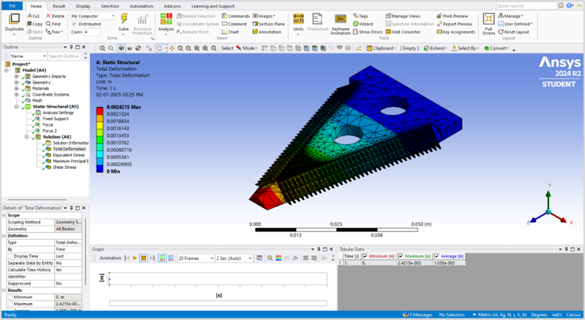

Design & FEA of Reaper
Structural optimization of a vertical conveyor reaper using Solidworks and ANSYS to ensure durability and efficiency in crop harvesting.
Verified Structural Integrity
Objective
Design Challenge
Reapers face intense vibrations and mechanical stress during operation in varied field conditions. The objective was to design a robust frame and cutter bar mechanism that balances weight reduction with structural reliability.
Goal
- Model a vertical conveyor reaper with precise mechanical linkages.
- Perform Static Structural Analysis to identify stress concentration zones.
- Optimize material usage while maintaining a high factor of safety.
Process & Tech Stack
01 Assembly Design
Complex CAD assembly in Solidworks, including star wheels, guide springs, and cutting blades.
02 Meshing & Loading
Fine-tuned meshing in ANSYS with realistic boundary conditions for torque and vibration loads.
Tools & Software
Visual Evidence

ANSYS Stress Plot
Von-Mises stress distribution
FEA results showing the deformation across the reaper blade, highlighting areas optimized for reinforcement.
Analysis Workflow
Solidworks Modeling
Creating high-precision parts and assemblies ready for simulation.
ANSYS Solver
Running iterations to validate safety under peak operational loads.
Outcome
Weight Reduction
Optimized for portability
Safety Factor
Maximum load capacity
Confidence
Simulation accuracy
Total Weight
Portable assembly
The design and FEA analysis proved that the reaper frame could handle significantly higher loads than anticipated while actually reducing the overall weight. The FEA insights allowed for reducing material thickness in low-stress zones without compromising the 2.5 safety factor, resulting in a more efficient and portable harvesting tool.